Create operational records without returning to a desktop workstation.
Every filter, machine,
PSI check, and
maintenance action
in one system.
Every filter,
machine, PSI
check, and
maintenance
action in one
system.
The new FiltraCore update makes setup faster from mobile: add machines, register inventory, install filters, log maintenance, and review operational risk from the floor.
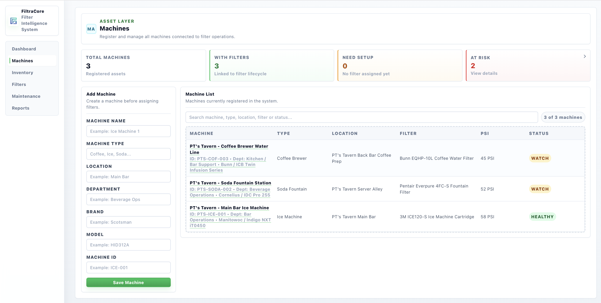
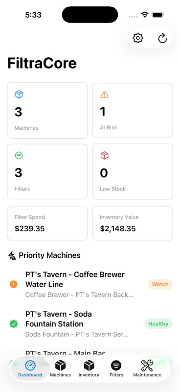
Track due dates, PSI history, and filter status by machine.
Keep inventory value and stock levels visible for purchasing decisions.
Surface watch items before they become downtime or service quality issues.
New mobile workflow
A simpler process for the people doing the work.
The phone screens now cover the core field routine: create the machine, add the filter product, install the filter, record PSI, and log maintenance without jumping through the desktop modules.
Add the machine
Capture name, type, location, department, brand, model, and machine ID in one clean form.
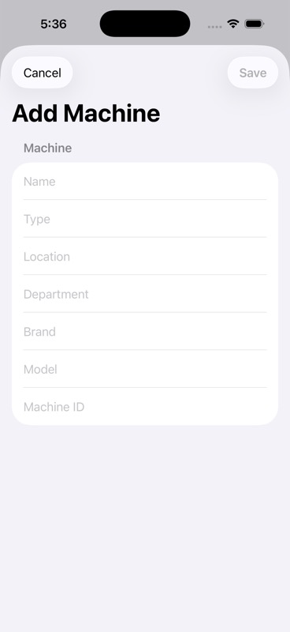
Install the filter
Select the machine, choose inventory, set lifespan, and create due dates from the phone.
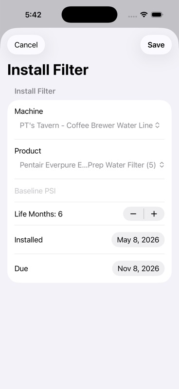
Monitor PSI
Review active filters, update pressure readings, and flag watch items from the same mobile view.
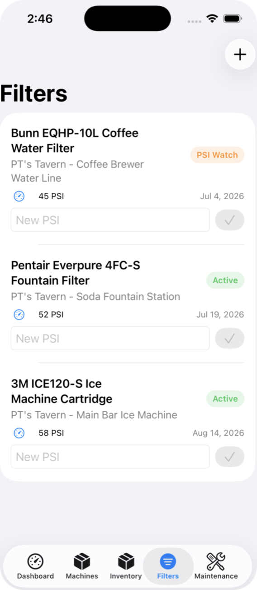
Log maintenance
Record inspections, corrected PSI, notes, and replacement actions while the work is fresh.
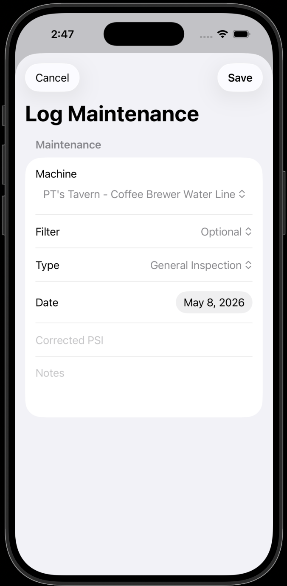
Desktop command center
The full operation stays organized by module.
Supervisors can move through machines, inventory, filters, maintenance, and reports while the mobile workflow keeps frontline updates flowing into the same system.
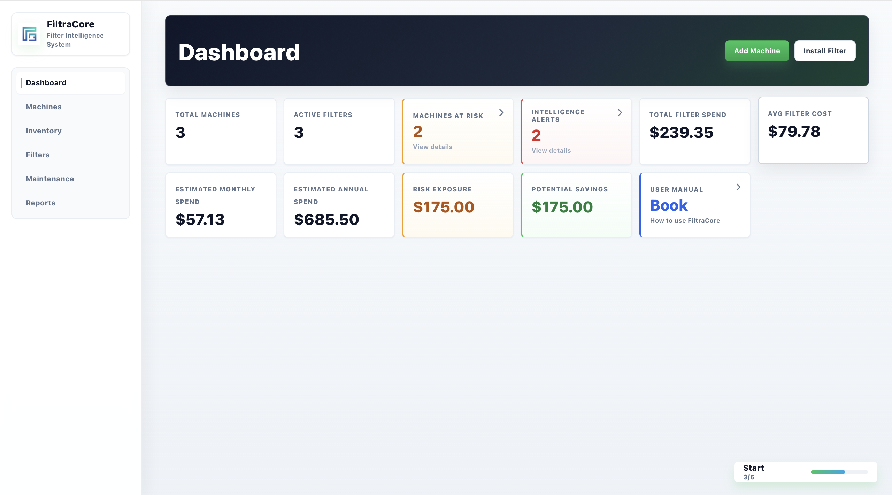
Register assets before assigning filters.
Location, department, model, ID, status, PSI, and installed filter stay tied to each machine.
Control product stock and unit cost.
Track reorder levels and inventory value before filters are assigned into the lifecycle.
Monitor lifecycle and pressure.
Due dates, days left, PSI, watch status, and maintenance actions are visible in one table.
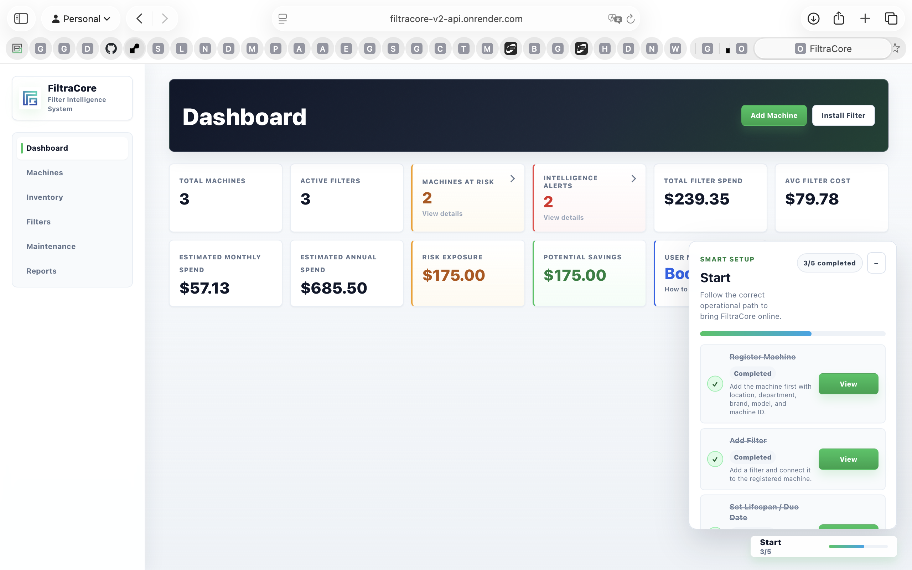
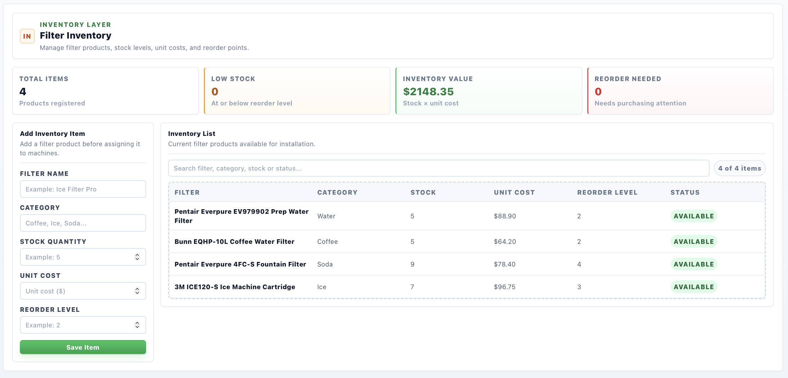
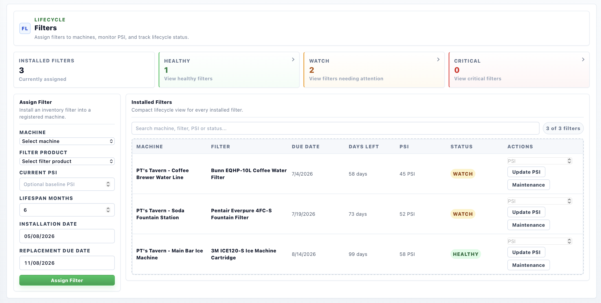
Executive intelligence
Reports connect financial exposure with operational risk.
FiltraCore turns filter data into a practical management view: total spend, average cost, monthly and annual estimates, pending maintenance, risk exposure, potential savings, stock control, and printable summaries.
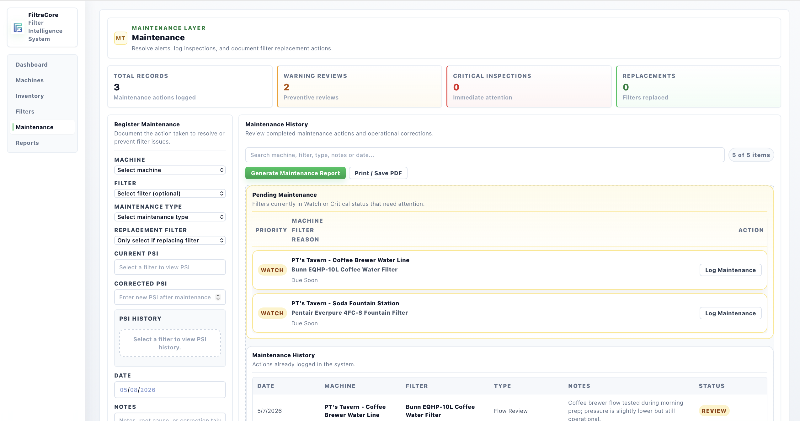
Food service operations
Built around preventive filter discipline.
FiltraCore supports daily routines inspired by HACCP-style prevention, FIFO inventory habits, traceable maintenance logs, and NSF-focused sanitation practices. It is designed to help teams document work consistently before small filter issues turn into service disruption.
PSI monitoring
Record baseline and corrected pressure readings so changing flow conditions are visible.
Filter lifecycle
Track installation dates, due dates, lifespan months, and days left by machine.
Traceability logs
Keep maintenance type, notes, technician action, and filter replacement context in one record trail.
Inventory readiness
Connect available stock, reorder levels, and installed filters so purchasing has better context.
Ready to bring FiltraCore online?
Request access to the current demo and review the new mobile workflow with the desktop command center.